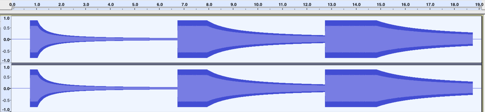

{{ APIRef("Web Audio API") }}
The refDistance property of the {{ domxref("PannerNode") }} interface is a double value representing the reference distance for reducing volume as the audio source moves further from the listener – i.e. the distance at which the volume reduction starts taking effect. This value is used by all distance models.
The refDistance property's default value is 1.
var audioCtx = new AudioContext(); var panner = audioCtx.createPanner(); panner.refDistance = 1;
A non-negative number. If the value is set to less than 0, a RangeError is thrown.
RangeErrorThis example demonstrates how different values of {{ domxref("PannerNode.refDistance", "refDistance") }} affect how the volume of a sound decays as it moves away from the listener. Unlike {{ domxref("PannerNode.rolloffFactor", "rolloffFactor") }}, changing this value also delays the volume decay until the sound moves past the reference point.
const context = new AudioContext();
// all our test tones will last this many seconds
const NOTE_LENGTH = 6;
// this is how far we'll move the sound
const Z_DISTANCE = 20;
// this function creates a graph for the test tone with a given refDistance
// and schedules it to move away from the listener along the Z (depth-wise) axis
// at the given start time, resulting in a decrease in volume (decay)
const scheduleTestTone = (refDistance, startTime) => {
const osc = new OscillatorNode(context);
const panner = new PannerNode(context);
panner.refDistance = refDistance;
// set the initial Z position, then schedule the ramp
panner.positionZ.setValueAtTime(0, startTime);
panner.positionZ.linearRampToValueAtTime(Z_DISTANCE, startTime + NOTE_LENGTH);
osc.connect(panner)
.connect(context.destination);
osc.start(startTime);
osc.stop(startTime + NOTE_LENGTH);
};
// this tone should decay immediately and fairly quickly
scheduleTestTone(1, context.currentTime);
// this tone should decay slower and later than the previous one
scheduleTestTone(4, context.currentTime + NOTE_LENGTH);
// this tone should decay only slightly, and only start decaying fairly late
scheduleTestTone(7, context.currentTime + NOTE_LENGTH * 2);
After running this code, the resulting waveforms should look something like this:

{{Compat}}